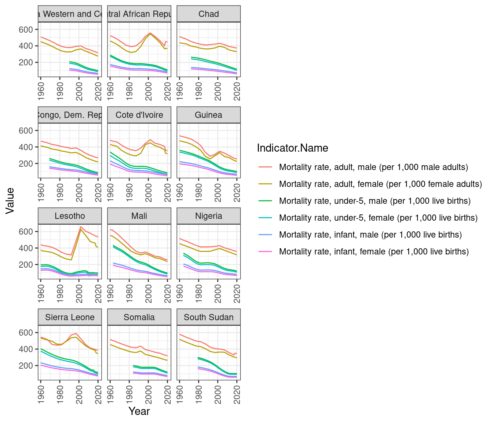

Chapter 4 Results
We proposed to analyze various social, economic, and environmental indicators for various countries over the years. We have broken down our results into three distinct sections with each of them discussing a few relevant indicators.
4.2 Economic Indicators
Next we try to gauge the economic landscape of the world by analyzing two indicators - GDP (through GDP and GDP per Capita) and Income Disparity (through Income share held by highest 20% and Income share held by lowest 20%).
4.2.1 Gross Domestic Product
According to wikipedia, Gross domestic product (GDP) is a monetary measure of the market value of all the final goods and services produced and sold (not resold) in a specific time period by countries. We use both GDP and GDP per capita as we want to compare both national economies on the international market (GDP) and living standards between nations (GDP per capita).

Initially, we plot the overall GDP of the world over the years by aggregating individual GDP values. We observe that overall the GDP of the world has risen. Obviously, this trend is expected as the world economy has grown, and more and more countries have started contributing. This is backed by the reduction in the number of missing values over the years. Further, we observe three significant dips in the overall GDP.
- Around 2008 (red), the world witnessed the Great Depression.
- In 2014 (blue), there was another financial crisis observed in Russia, Brazil where prices of oil barrels dropped by nearly 40%.
- In 2019 (green), humanity faced its biggest challenge in Covid-19 leading to a collapse of the stock market.

We use choropleth.


4.1 Social Indicators
In the following subsections, we are going to visualize various plots depicting and comparing yearly trends for various indicators. We will also be comparing certain indicators across countries to understand the overall status of development around the world.
4.1.1 Mortality Rates
We start off our discussion with mortality rates. Mortality rate is typically expressed in units of deaths per 1,000 individuals per year (wikipedia). The dataset has multiple indicators depicting mortality rates based on demographics. The most relevant ones are:
One thing that strikes the eye immediately is that the mortality rate for infant male or infant female would be less than the mortality rate of adult male or adult female. This is due to the definition of the indicators for infants. They are calculating number of deaths of male and female infants per 1000 live births whereas adult mortality rates are being recorded per 1000 adults of the respective gender. However, the infant mortality rates would be less than adult mortality rates due to the nature of life.
We observe the following:
The above plot shows the countries that have the maximum mortality rates. To view the trend of mortality rates over the years, we handpick these countries and draw line charts for various mortality rates. We use the trick of faceting to make the process of reading the graph easy and aesthetic at the same time.
We observe the following:
4.1.2 Life Expectancy
4.1.3 Literacy Rates